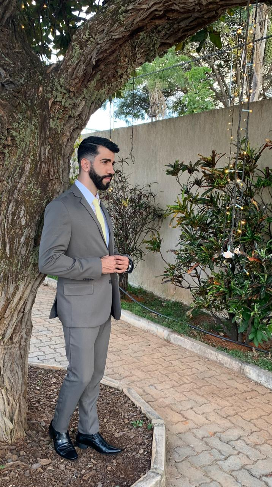
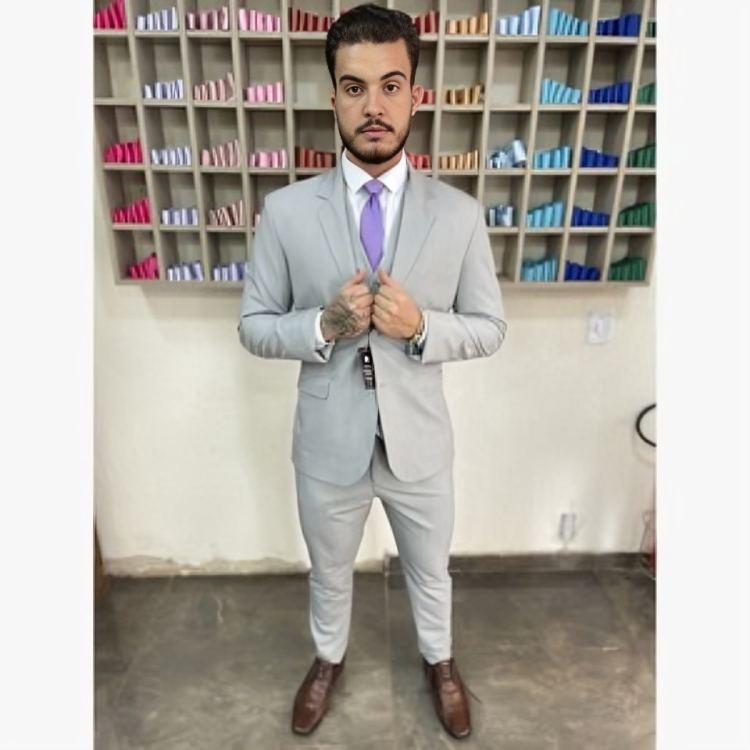

Ternos Cinzas
Uma paleta imponente que transita com perfeição entre grandes eventos corporativos e celebrações matrimoniais. Do frescor do cinza claro à sobriedade do chumbo.

Cinza JE
Corte exclusivo da linha JE. Proporções ajustadas ao corpo que valorizam a postura e garantem máximo conforto.
Consultar Disponibilidade
Cinza Claro Raffer
O refinamento da conceituada grife Raffer em um tom claro refrescante. Matéria-prima selecionada para noivos e padrinhos exigentes.
Consultar Disponibilidade
Melange Cinza
Tecido com fiação mesclada que cria uma textura visual rica e sofisticada. Muito estilo e personalidade em uma só peça.
Consultar Disponibilidade
Chumbo
Tom fechado e sóbrio com acabamento refinado. Perfeito para padrinhos que buscam um padrão harmônico e elegante.
Consultar Disponibilidade
JE Royale
Versão premium da linha JE. Tecido com toque de sofisticação superior e forro interno trabalhado para grandes ocasiões.
Consultar DisponibilidadeNíquel
Tom intermediário moderno com brilho sutil metalizado. Ideal para se destacar com discrição em eventos diurnos ou no fim de tarde.
Consultar Disponibilidade
Smoking JE
O refinamento da lapela de gala aplicada à elegância do cinza. Escolha ideal para formandos e recepções black tie modernas.
Consultar Disponibilidade
Chumbo Escamado
Textura diferenciada que simula microescamas sobre o tom cinza-escuríssimo, quebrando a mesmice com extrema elegância.
Consultar Disponibilidade
Grafite
Tom cinza escuro clássico e imponente. Uma excelente alternativa ao terno preto para eventos noturnos ou reuniões de alta liderança.
Consultar Disponibilidade
Cinza Claro Inox
Tom aberto, limpo e super moderno. Uma das opções mais requisitadas para casamentos diurnos e cerimônias ao ar livre.
Consultar Disponibilidade
Cinza FD
Um terno cinza simples é a definição de versatilidade e elegância atemporal. Ideal para transitar entre o ambiente corporativo e eventos sociais.
Consultar Disponibilidade
Summer Grafite
Modelagem e tecido mais leves, desenvolvidos especificamente para manter a imponência do grafite mesmo em dias mais quentes.
Consultar Disponibilidade